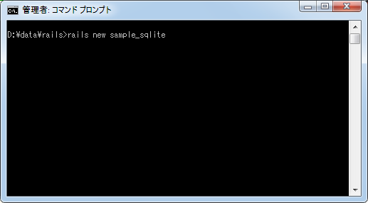
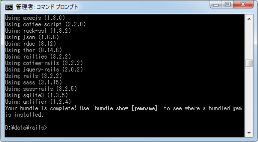
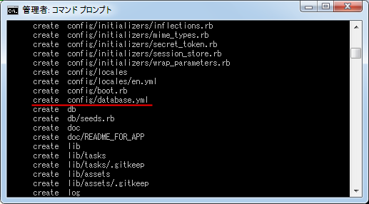
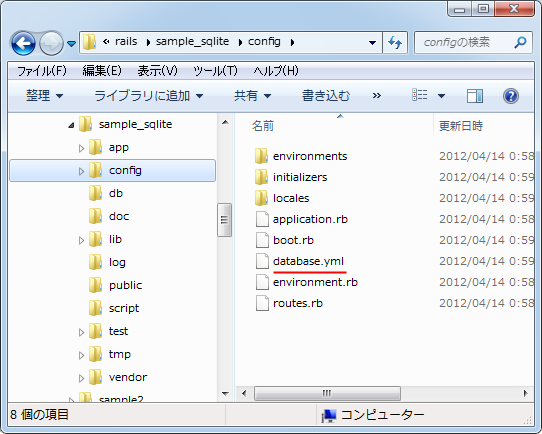

SQLite用のデータベース設定ファイル(database.yml)
Railsでアプリケーションを作成すると自動的にデータベースに関する設定を記述する「database.yml」ファイルが作成されます。このページではデータベースとしてSQLiteを使用する場合のデータベース設定ファイルの見方について解説いたします。
1.「config/database.yml」ファイル
2.実行モード
3.設定ファイルの解説
「config/database.yml」ファイル
Railsのアプリケーションで使用するデータベースの種類はMySQLやPostgreSQLなどいくつかありますが、デフォルトではSQLiteを使用するようになっています。そのため、Railsアプリケーションを作成する時に特に指定しなければまずSQLiteを使う前提でデータベース設定ファイルが作成されます。
では実際に試してみます。次のようにテスト用の「sample_sqlite」アプリケーションを作成します。


Railsアプリケーション作成時に数多くのファイルが自動的に作成されますが、その中でデータベース設定ファイルの「config/database.yml」ファイルも作成されています。

実際にファイルが作成されていることが確認できます。

ではファイルをテキストエディタで開いてみて下さい。
# SQLite version 3.x # gem install sqlite3 # # Ensure the SQLite 3 gem is defined in your Gemfile # gem 'sqlite3' development: adapter: sqlite3 database: db/development.sqlite3 pool: 5 timeout: 5000 # Warning: The database defined as "test" will be erased and # re-generated from your development database when you run "rake". # Do not set this db to the same as development or production. test: adapter: sqlite3 database: db/test.sqlite3 pool: 5 timeout: 5000 production: adapter: sqlite3 database: db/production.sqlite3 pool: 5 timeout: 5000
特に指定をしていないためSQLiteを使用する前提でデフォルトの値などが記載されています。
実行モード
Railsではアプリケーションを実行する時に3つのモード(開発、テスト、本番)が用意されています。そして同じアプリケーションであっても実行モード毎に使用するデータベースを変えることができます。例えば開発時に使用していたテストデータが格納されるデータベースと、本番時に使用する実際のデータが格納されるデータベースを分けることができますし、設定項目も実行モード毎に別々に設定できます。
改めてデータベース設定ファイルの「config/database.yml」ファイルを見て頂くと大きく3つに分かれており、development(開発用)、test(テスト用)、production(本番用)、のそれぞれで使用するデータベース名や設定を記述できるようになっています。
development: 実行モードが開発の場合の設定を記載 test: 実行モードがテストの場合の設定を記載 production: 実行モードが本番の場合の設定を記載
実行モードではデフォルトでは「開発」になっています。モードは環境変数を設定することで変更することができます(詳細はまた別のページで解説します)。
設定ファイルの解説
設定ファイルで記載されている項目は次のとおりです。
adapter: 使用するデータベース database: データベースファイル名 pool: コネクションプーリングで使用するコネクションの上限 timeout: タイムアウトまでの時間(ms)
SQLiteの場合はデータベース毎に1つのファイルとなっています。別のページで解説するデータベースの作成を行うと「database」で設定されたファイルが作成されます。
( Written by Tatsuo Ikura )

著者 / TATSUO IKURA
初心者～中級者の方を対象としたプログラミング方法や開発環境の構築の解説を行うサイトの運営を行っています。